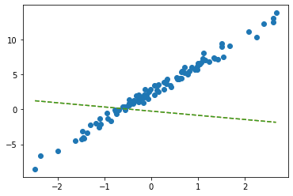
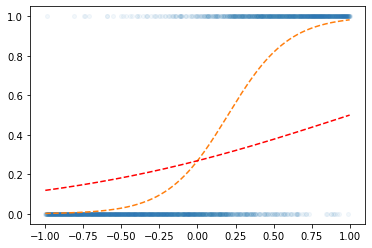

회귀분석 (2) – MSE와 SSE, step1의 다른표현, step4의 다른표현 // 로지스틱 (1) – 로지스틱 인트로
강의영상
https://youtube.com/playlist?list=PLQqh36zP38-w99vLjXRfOzDE1PyOVh9bR
imports
numpy, torch (선택학습)
numpy, torch는 엄청 비슷해요
- torch.tensor() = np.array() 처럼 생각해도 무방
- 소수점의 정밀도에서 차이가 있음 (torch가 좀 더 쪼잔함)
- 기본적인 numpy 문법은 np 대신에 torch를 써도 무방 // 완전 같지는 않음
(array([0, 1, 2, 3, 4, 5, 6, 7, 8, 9]), tensor([0, 1, 2, 3, 4, 5, 6, 7, 8, 9]))(array([0. , 0.11111111, 0.22222222, 0.33333333, 0.44444444,
0.55555556, 0.66666667, 0.77777778, 0.88888889, 1. ]),
tensor([0.0000, 0.1111, 0.2222, 0.3333, 0.4444, 0.5556, 0.6667, 0.7778, 0.8889,
1.0000]))array([ 0.68732684, -0.53367188, 0.27916096, 0.28236708, 0.03800702,
-0.66236923, 1.32472364, -0.11671166, -0.77019834, -1.14755872])length \(n\) vector, \(n \times 1\) col-vector, \(1 \times n\) row-vector
- 길이가 3인 벡터 선언방법
- 3x1 col-vec 선언방법
(방법1)
(방법2)
- 1x3 row-vec 선언방법
(방법1)
(방법2)
- 3x1 col-vec 선언방법, 1x3 row-vec 선언방법에서 [[1],[2],[3]] 혹은 [[1,2,3]] 와 같은 표현이 이해안되면 아래링크로 가셔서
https://guebin.github.io/STBDA2022/2022/03/14/(2주차)-3월14일.html
첫번째 동영상 12:15 - 22:45 에 해당하는 분량을 학습하시길 바랍니다.
torch의 dtype
- 기본적으로 torch는 소수점으로 저장되면 dtype=torch.float32 가 된다. (이걸로 맞추는게 편리함)
- 정수로 선언하더라도 dtype를 torch.float32로 바꾸는게 유리함
(안 좋은 선언예시)
(좋은 선언예시1)
(좋은 선언예시2)
(사실 int로 선언해도 나중에 float으로 바꾸면 큰 문제없음)
- 왜 정수만으로 torch.tensor를 만들때에도 torch.float32로 바꾸는게 유리할까? \(\to\) torch.tensor끼리의 연산에서 문제가 될 수 있음
별 문제 없을수도 있지만
아래와 같이 에러가 날수도 있다
(에러1)
RuntimeError: expected scalar type Float but found Long(에러2)
RuntimeError: expected scalar type Long but found Float(해결1) 둘다 정수로 통일
(해결2) 둘다 소수로 통일 <– 더 좋은 방법임
shape of vector
- 행렬곱셈에 대한 shape 조심
(torch.Size([2, 2]), torch.Size([1, 2]), torch.Size([2, 1]), torch.Size([2]))- A@b1: 계산불가, b1@A: 계산가능
- A@b2: 계산가능, b2@A: 계산불가
- A@b3: 계산가능, b3@A: 계산가능
- 브로드캐스팅
Review: step1~4
df = pd.read_csv("https://raw.githubusercontent.com/guebin/DL2022/master/_notebooks/2022-09-22-regression.csv")
df| x | y | |
|---|---|---|
| 0 | -2.482113 | -8.542024 |
| 1 | -2.362146 | -6.576713 |
| 2 | -1.997295 | -5.949576 |
| 3 | -1.623936 | -4.479364 |
| 4 | -1.479192 | -4.251570 |
| ... | ... | ... |
| 95 | 2.244400 | 10.325987 |
| 96 | 2.393501 | 12.266493 |
| 97 | 2.605604 | 13.098280 |
| 98 | 2.605658 | 12.546793 |
| 99 | 2.663240 | 13.834002 |
100 rows × 2 columns
tensor([[-5.],
[10.]], requires_grad=True)
ver1: loss = sum of squares error

ver1: loss = sum of squares error
tensor([[-5.],
[10.]], requires_grad=True)
step1의 다른버전 – net 설계만
ver1: net = torch.nn.Linear(1,1,bias=True)
(Parameter containing:
tensor([-0.8470], requires_grad=True),
Parameter containing:
tensor([[-0.3467]], requires_grad=True))plt.plot(x,y,'o')
plt.plot(x,net(x).data,'--')
w0hat=-0.8470
w1hat=-0.3467
plt.plot(x,w0hat+w1hat*x ,'--')
- net에서 \(\hat{w}_0, \hat{w}_1\) 의 값은?
- 수식표현: \(\hat{y}_i = \hat{w}_0 + \hat{w}_1 x_i = \hat{b} + \hat{w}x_i = -0.8470 + -0.3467 x_i\) for all \(i=1,2,\dots,100\).
ver2: net = torch.nn.Linear(2,1,bias=False)
plt.plot(x,y,'o')
plt.plot(x,net(X).data,'--')
plt.plot(x,X@torch.tensor([[-0.2451], [-0.5989]]),'--')
- 수식표현: \(\hat{\bf y} = {\bf X} {\bf \hat W} = \begin{bmatrix} 1 & x_1 \\ 1 & x_2 \\ \dots & \dots \\ 1 & x_{100} \end{bmatrix} \begin{bmatrix} -0.2451 \\ -0.5989 \end{bmatrix}\)
잘못된사용1
tensor([-2.4821, -2.3621, -1.9973, -1.6239, -1.4792, -1.4635, -1.4509, -1.4435,
-1.3722, -1.3079, -1.1904, -1.1092, -1.1054, -1.0875, -0.9469, -0.9319,
-0.8643, -0.7858, -0.7549, -0.7421, -0.6948, -0.6103, -0.5830, -0.5621,
-0.5506, -0.5058, -0.4806, -0.4738, -0.4710, -0.4676, -0.3874, -0.3719,
-0.3688, -0.3159, -0.2775, -0.2772, -0.2734, -0.2721, -0.2668, -0.2155,
-0.2000, -0.1816, -0.1708, -0.1565, -0.1448, -0.1361, -0.1057, -0.0603,
-0.0559, -0.0214, 0.0655, 0.0684, 0.1195, 0.1420, 0.1521, 0.1568,
0.2646, 0.2656, 0.3157, 0.3220, 0.3461, 0.3984, 0.4190, 0.5443,
0.5579, 0.5913, 0.6148, 0.6469, 0.6469, 0.6523, 0.6674, 0.7059,
0.7141, 0.7822, 0.8154, 0.8668, 0.9291, 0.9804, 0.9853, 0.9941,
1.0376, 1.0393, 1.0697, 1.1024, 1.1126, 1.1532, 1.2289, 1.3403,
1.3494, 1.4279, 1.4994, 1.5031, 1.5437, 1.6789, 2.0832, 2.2444,
2.3935, 2.6056, 2.6057, 2.6632])잘못된사용2
plt.plot(x,y,'o')
plt.plot(x,net(X).data,'--')
plt.plot(x,X@torch.tensor([[-0.2451],[-0.5989]])+0.2549,'-.')- 수식표현: \(\hat{\bf y} = {\bf X} {\bf \hat W} + \hat{b}= \begin{bmatrix} 1 & x_1 \\ 1 & x_2 \\ \dots & \dots \\ 1 & x_{100} \end{bmatrix} \begin{bmatrix} -0.2451 \\ -0.5989 \end{bmatrix} + 0.2549\)
step1의 다른버전 – 끝까지
ver1: net = torch.nn.Linear(1,1,bias=True)
- 준비
net = torch.nn.Linear(1,1)
net.bias.data = torch.tensor([-5.0])
net.weight.data = torch.tensor([[10.00]])
net.bias,net.weight(Parameter containing:
tensor([-5.], requires_grad=True),
Parameter containing:
tensor([[10.]], requires_grad=True))
- step1
- step2
- step3
(미분전)
(Parameter containing:
tensor([-5.], requires_grad=True),
Parameter containing:
tensor([[10.]], requires_grad=True))(미분)
(미분후)
(Parameter containing:
tensor([-5.], requires_grad=True),
Parameter containing:
tensor([[10.]], requires_grad=True))- step4
(업데이트전)
(Parameter containing:
tensor([-5.], requires_grad=True),
Parameter containing:
tensor([[10.]], requires_grad=True))(업데이트)
(업데이트후)
(Parameter containing:
tensor([-3.6577], requires_grad=True),
Parameter containing:
tensor([[8.8111]], requires_grad=True))- 반복하자.


ver2: net = torch.nn.Linear(2,1,bias=False)
- 준비
net = torch.nn.Linear(in_features=2,out_features=1,bias=False)
net.weight.data = torch.tensor([[-5.0, 10.0]])
net.weightParameter containing:
tensor([[-5., 10.]], requires_grad=True)- step1
- step2
- step3
(미분전)
(미분)
(미분후)
- step4
(업데이트전)
(업데이트)
(업데이트후)
- 반복하면

step4의 다른버전: 옵티마이저!
ver1: net = torch.nn.Linear(1,1,bias=True)
- 준비단계
net = torch.nn.Linear(1,1)
net.bias.data = torch.tensor([-5.0])
net.weight.data = torch.tensor([[10.0]])
net.bias,net.weight(Parameter containing:
tensor([-5.], requires_grad=True),
Parameter containing:
tensor([[10.]], requires_grad=True))- step1~3
- step4
(업데이트전)
(Parameter containing:
tensor([-5.], requires_grad=True),
Parameter containing:
tensor([[10.]], requires_grad=True))(업데이트)
(업데이트후)
(Parameter containing:
tensor([-3.6577], requires_grad=True),
Parameter containing:
tensor([[8.8111]], requires_grad=True))- 반복하자.


ver2: net = torch.nn.Linear(2,1,bias=False)
- 바로 반복하자..
Parameter containing:
tensor([[-5., 10.]], requires_grad=True)

Appendix: net.parameters()의 의미? (선택학습)
- iterator, generator의 개념필요
- https://guebin.github.io/IP2022/2022/06/06/(14주차)-6월6일.html, 클래스공부 8단계 참고
- 탐구시작: 네트워크 생성
Parameter containing:
tensor([[-0.1656]], requires_grad=True)- torch.optim.SGD? 를 확인하면 params에 대한설명에 아래와 같이 되어있음
params (iterable): iterable of parameters to optimize or dicts defining
parameter groups- 설명을 읽어보면 params에 iterable object를 넣으라고 되어있음 (iterable object는 숨겨진 명령어로 __iter__를 가지고 있는 오브젝트를 의미)
- 무슨의미?
- 이건 이런느낌인데?
- 즉 아래는 같은코드이다.
### 코드1
_generator = net.parameters()
torch.optim.SGD(_generator,lr=1/10)
### 코드2
_generator = iter([net.weight,net.bias])
torch.optim.SGD(_generator,lr=1/10)
### 코드3 (이렇게 써도 코드2가 실행된다고 이해할 수 있음)
_iterator = [net.weight,net.bias]
torch.optim.SGD(_iterator,lr=1/10) 결론: net.parameters()는 net오브젝트에서 학습할 파라메터를 모두 모아 리스트(iterable object)로 만드는 함수라 이해할 수 있다.
- 응용예제1


- 응용예제2


Logistic regression
motive
- 현실에서 이런 경우가 많음 - \(x\)가 커질수록 (혹은 작아질수록) 성공확률이 증가함.
- (X,y)는 어떤모양?
| x | y | |
|---|---|---|
| 0 | -6 | 0 |
| 1 | -5 | 0 |
| 2 | -4 | 0 |
| 3 | -3 | 0 |
| 4 | -2 | 0 |
| 5 | -1 | 0 |
| 6 | 0 | 1 |
| 7 | 1 | 0 |
| 8 | 2 | 1 |
| 9 | 3 | 1 |
| 10 | 4 | 1 |
| 11 | 5 | 1 |
| 12 | 6 | 1 |
- (예비학습) 시그모이드라는 함수가 있음
model
- \(x\)가 커질수록 \(y=1\)이 잘나오는 모형은 아래와 같이 설계할 수 있음 <— 외우세요!!!
$y_i Ber(_i),$ where \(\pi_i = \frac{\exp(w_0+w_1x_i)}{1+\exp(w_0+w_1x_i)}\)
\(\hat{y}_i= \hat{\pi}_i=\frac{\exp(\hat{w}_0+\hat{w}_1x_i)}{1+\exp(\hat{w}_0+\hat{w}_1x_i)}=\frac{1}{1+\exp(-\hat{w}_0-\hat{w}_1x_i)}\)
\(loss= - \sum_{i=1}^{n} \big(y_i\log(\hat{y}_i)+(1-y_i)\log(1-\hat{y}_i)\big)\) <— 외우세요!!
toy example
- 최초의 곡선
w0hat= -1
w1hat = 1
yhat = f(w0hat+x*w1hat)
plt.plot(x,y,'o',alpha=0.05,ms=4)
plt.plot(x,v,'--')
plt.plot(x,yhat,'--r')
- step1: yhat
w0hat= -1
w1hat = 1
yhat = a1(l1(x))
plt.plot(x,y,'o',alpha=0.05,ms=4)
plt.plot(x,v,'--')
plt.plot(x,yhat.data,'--r')- step1~4 반복